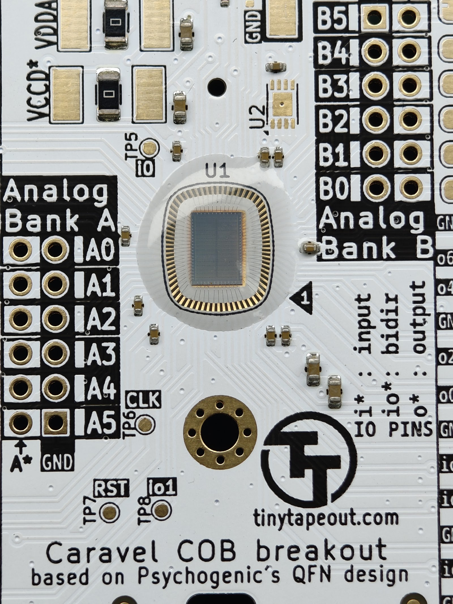

What we do
Services
End-to-end support for ASIC teams — from bare die to finished, fulfilled product.

Die Wire Bonding (COB)
Bare die ASIC wire bonding directly to PCB — chip-on-board assembly for low-volume and prototype runs through to production.

Die Packaging
Packaging options for bare die, matched to your volume, budget and reliability requirements.

Component Sourcing
Sourcing of parts and materials across the supply chain, so your build isn't held up by a missing line item.

Testing
Product testing to catch issues before they leave the factory floor.

Manufacturing & Kitting
Manufacturing and kitting services on the ground in mainland China.

Fulfillment
Fulfillment support to get finished product from the factory to your customers.
Our work

